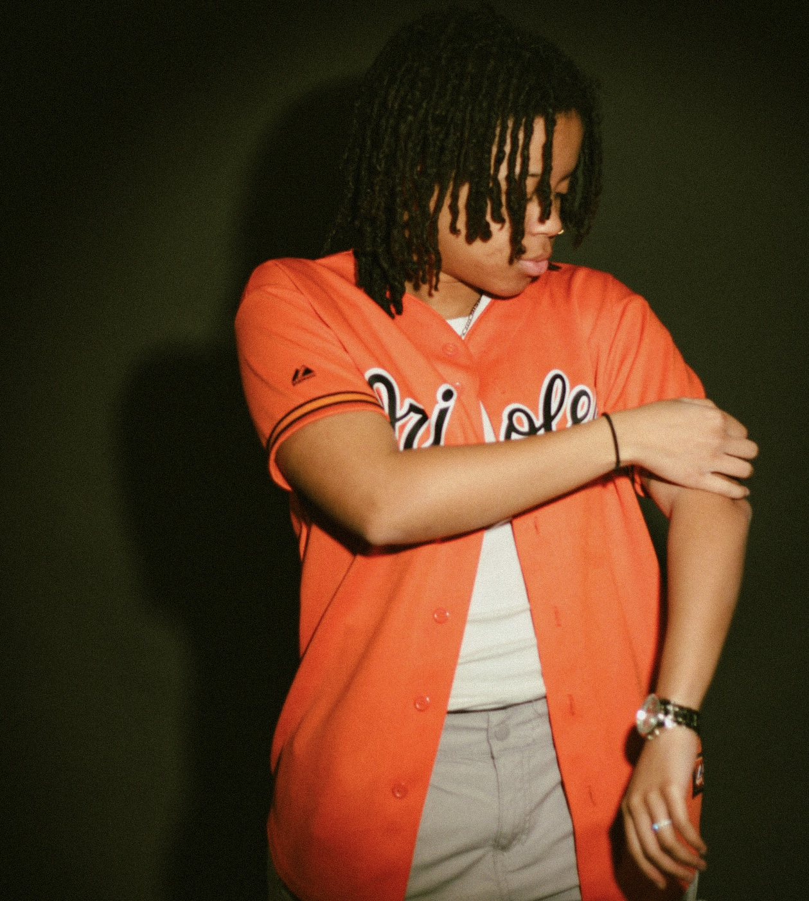

Niya Nixon

Summary
I am a hard working indivitual who craves challenges and loves to learn everyday,
with exprerience in customer service and social media marketing
Education
- Graduated from Riverside High School (GPA: 3.7)
- Some College at Temple University fall(2021)
Work Experience
- Social Media Manager/Team Member - Juiced By B
June 2023 - Current job
- Took product picture
- Worked as a team member at one of the locations
- Made some of the Instagram post
- Vernick Food & Drink
June 2023 - August 2023
- Food Runnner
- Learned the menu detailed
- Expo If It was needed
- Bar Lesieur
Current Job
- Food Run
- Expo
- Learn the menu in full detail
Skills
- Customer Service
- Social Media Strategies
- Photography
Other